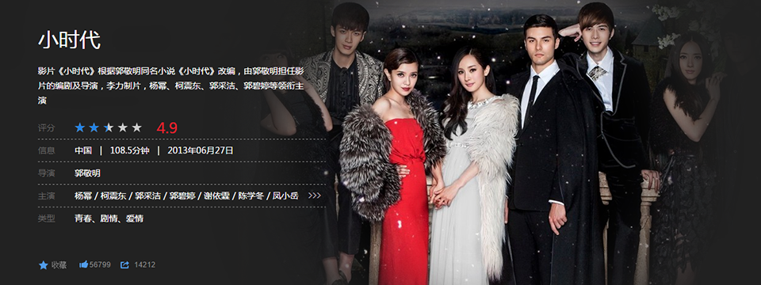
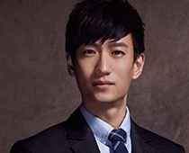

电影院之推荐篇——每个人都是自己生活的导演
梦想始于剧本，而终结于电影。让一个人置身于变幻无穷的环境中，让他与数不尽或远或近的人物错身而过，让他与整个世界发生关系：这就是电影的意义。
——安德烈·塔可夫斯基（苏联）
首页
小时代
暮光之城
魔戒三部曲
等风来
泰坦尼克号

林萧：上海大学中文系毕业，与顾里、南湘、唐宛如为好友，是文科中的佼佼者。现担任《M.E》杂志执行主编（宫洺）的私人助理。喜欢文字，重视友情，性格温和，没有主见，有时候有点孩子气，一直以来觉得自己是一个小人物，很佩服好友顾里和同事kitty。从高中时与简溪恋爱，后与《M.E》专栏作家，宫洺弟弟崇光恋爱。
顾里：血型RH阴性血，狮子座。林萧的好友，一位会计系的美女，另外一个专业是国际金融学，在四年里面修完了双学士，有着A++的不败成绩，目标是作注册会计师。集中了天下所有女人的理智，冷静，残酷于一身的女人，语言刻薄，追求奢侈。男友是顾源。她是盛古集团董事长女儿，并非虚构，来源于威海盛古文化传媒有限公司名称简写。
南湘:血型RH阴性血，水瓶座。曾经获得很多美术方面的大奖。美貌属于天生丽质型的自然美，不施脂粉也完美无瑕，美得像一个谜一样。相貌是林萧、顾里、唐宛如、等女性中最出众的。文中曾费不少笔墨，形容她“美艳动人”，“美若天仙”，“清秀佳人”，“蛇蝎美人”等等。与席城分分合合。
唐宛如:是一名有着健硕肌肉的羽毛球运动员（国家二级运动员）。暗恋卫海，曾在大学时期留下不少的笑点及经典台词，是林萧梦中养的宠物鹌鹑——如如。她希望可以成为琼瑶剧里那些柔弱娇滴的女主角，总是能够发出不切实际的幻想,是最富有喜剧色彩的人物，导演郭敬明曾说这个角色暂时还不会被其他喜剧人物所超越。
顾源:星座，血型不明。专业为国际金融系，拥有良好优越的家世背景，是一位英俊且气质高贵的公子哥。性格和顾里有类似的地方，却没有她那么冷酷无情，有非常感性的一面。因为母亲（叶传萍）的关系一度和顾里冷战，但两人感情依旧深厚。后准备向顾里求婚，碍于没有适当的时机，还未有所行动。
宫洺:《M.E》的主编，是林萧的顶头上司，拥有着封面模特一般的俊貌及身材。崇光是其继母带来的并无血缘的弟弟，但崇光却是宫洺的弱点，十分疼爱这个弟弟。说话刻薄、谨慎，是唯一可以让顾里有点害怕的人，并可以和顾里的舌战中平手或胜利，有着计算机般的脑力。虽然头顶巨大的光环，可内心比谁都孤独。永远都有Plan B。
周崇光:是取代简溪的人气王，著名作家，温柔纯真，有爱心，爱好打游戏。喜欢林萧，有胃癌，认识林萧时已发展至晚期。另一男主角宫洺的弟弟在家里并未得到应有的关注，只有哥哥宫洺一直对他很好。后因哥哥宫洺与继父宫勋的一系列与公司相关的事件被迫整容并改名为陆烧，为著名模特。
卫海:外表活力健康，属于肌肉男类型，家庭背景不明。顾源的好友，南湘的现任男友，也是唐宛如的暗恋对象。前女友为童谣，因为唐宛如的暗恋使童谣产生误会，导致分手。卫海属运动型男孩儿，健康阳光，充满朝气，简单而干净。他木讷老实却又魅力四射。
席城:是集善良与邪恶于一身的人物，性格复杂又阴暗，与郭碧婷饰演的南湘上演一段刻骨铭心的感情纠葛。由于患有抑郁症的母亲自杀而走上堕落之路。他是南湘从初中爱到大学的男人，也是让南湘一度走向毁灭的灾难。他在顾里璀璨的王冠上留下过致命的污点，也因此几乎摧毁了四姐妹的友情堤坝。

简溪:外表干净俊秀，橡树一样挺拔，且待人温柔，有绅士风范。家境富裕。是林萧的男友，和顾源、顾里等人自初中时代起就是好友，是公认的白马王子。和林萧的感情一直很稳定，后发生了出轨并对林萧撒谎，导致两人出现裂痕，最后因顾里生日party上发生的一系列事件，而将林萧暂时放下，与林泉离开上海。